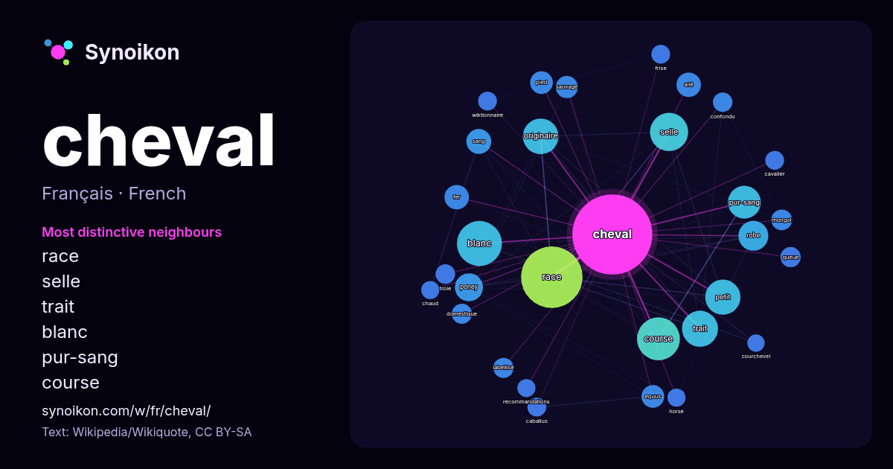

Français · liste des mots du jour
cheval
“horse” · Les mots trouvés autour de lui dans 1392 occurrences issues de Wikipédia, Wikiquote.

Voisins les plus spécifiques
- race 106×
- selle 53×
- trait 44×
- blanc 42×
- pur-sang 40×
- course 38×
- originaire 31×
- robe 30×
- poney 29×
- ailé 23×
- equus 20×
- sang 19×
- mongol 16×
- labellisé 16×
- sauvage 16×
- petit 15×
- troie 15×
- confondu 14×
- caballus 14×
- wiktionnaire 14×
× = combien de fois plus souvent que dans le texte général de Wikipédia.
Voisins les plus fréquents
- race 140
- blanc 75
- course 68
- selle 54
- trait 48
- originaire 47
- petit 46
- pur-sang 40
- robe 33
- poney 29
- sang 23
- ailé 22
- fer 22
- nom 22
- type 22
- equus 19
- france 19
- pied 19
- français 18
- sauvage 18
En contexte
- Equus caballus Pour les articles homonymes, voir Cheval (homonymie). Equus caballus Cheval gris (Equus caballus) de race Mangalarga marchador. Espèce Wikipedia snippets · Cheval
- l'entretien de 16 500 chevaux. L'abréviation est : ch pour le cheval-vapeur français. Il ne faut pas la confondre avec la notation « CV » du cheval fiscal ; hp Wikipedia snippets · Cheval-vapeur
- articles homonymes, voir Cheval (homonymie). Ferdinand Cheval Signature. Joseph Ferdinand Cheval, plus connu sous le nom du facteur Cheval, né le 19 avril 1836 Wikipedia snippets · Ferdinand Cheval
- les articles homonymes, voir Cheval de Troie (homonymie). Ne doit pas être confondu avec Cheval de Troie (virus). Un cheval de Troie (Trojan horse en anglais) Wikipedia snippets · Cheval de Troie (informatique)
- articles homonymes, voir pied. Le pied constitue l'extrémité des membres du cheval. Les autres membres du genre Equus, âne et zèbre, possèdent la même morphologie Wikipedia snippets · Pied (cheval)
- a donné son nom à cette sous-espèce de chevaux. Equus caballus przewalskii Equus caballus przewalskii Cheval de Przewalski. Sous-espèce Equus caballus Wikipedia snippets · Cheval de Przewalski
- Hippologie. La morphologie du cheval est, dans le domaine de l'hippologie, la description physique externe d'un cheval. Elle inclut une description de Wikipedia snippets · Morphologie du cheval
- dans le domaine de l'équitation, un cheval trapu de petite taille, intermédiaire entre poney, cheval de selle et cheval de trait, destiné aussi bien à l'attelage Wikipedia snippets · Cob (cheval)
Autres mots
- art
- automne
- carte
- chanson
- chat
- chemin
- chien
- climat
- cloche
- cœur
- dieu
- désert
- eau
- famille
- forêt
- histoire
- hiver
- horloge
- jardin
- langue
- miel
- miroir
- monnaie
- montagne
- mort
- mère
- nature
- nourriture
- ombre
- pain
- pluie
- pont
- pouvoir
- printemps
- santé
- science
- sel
- silence
- temps
- tempête
- thé
- train
- travail
- trésor
- vie
- ville
- vérité
- étoile
- île
Précalculé le 2026-10-09 avec les paramètres par défaut (±5 mots, corpus moyen). La carte interactive peut l’actualiser avec des données en direct.
Interface traduite automatiquement ; corrections bienvenues.